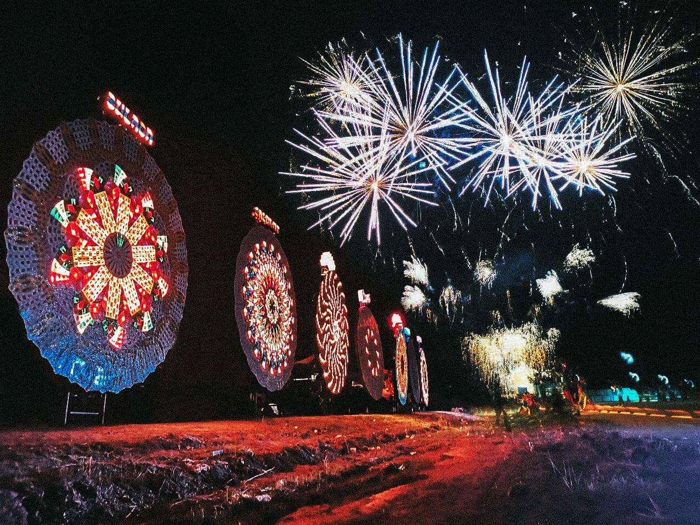
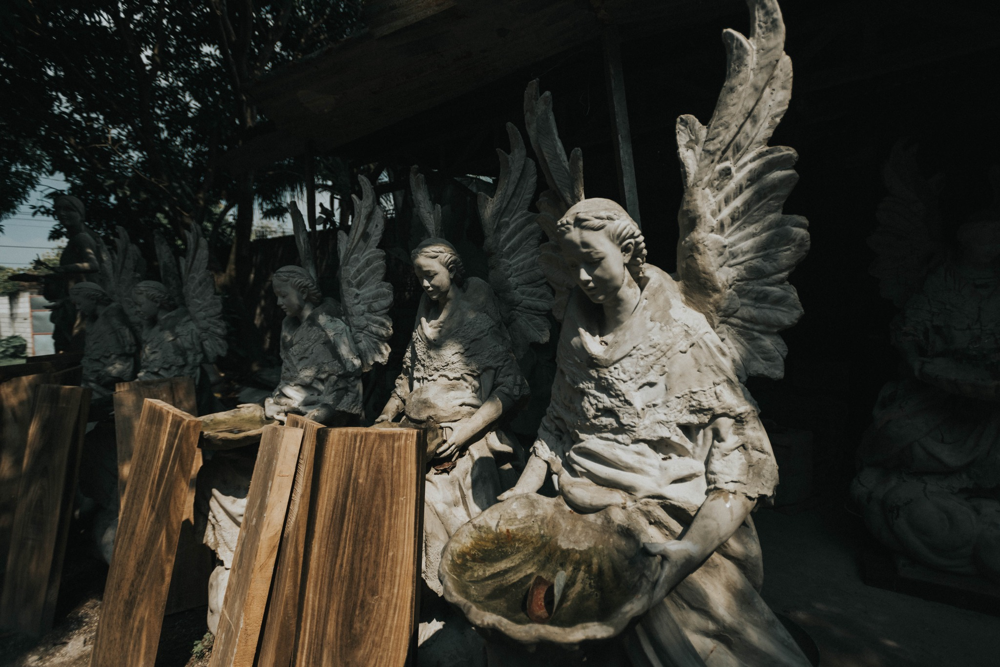
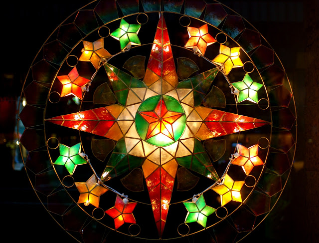
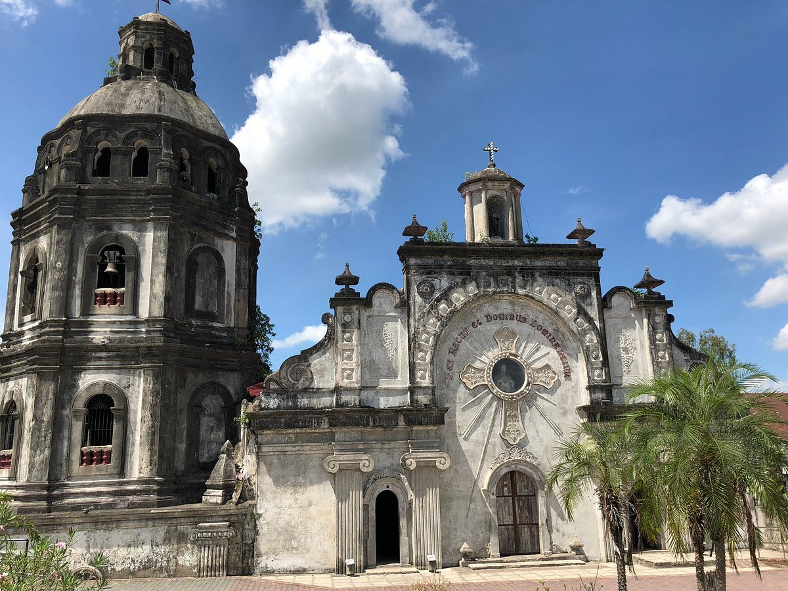
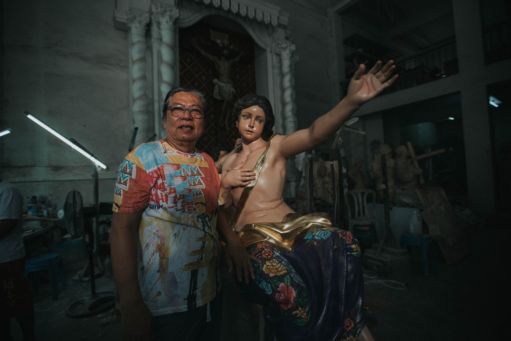
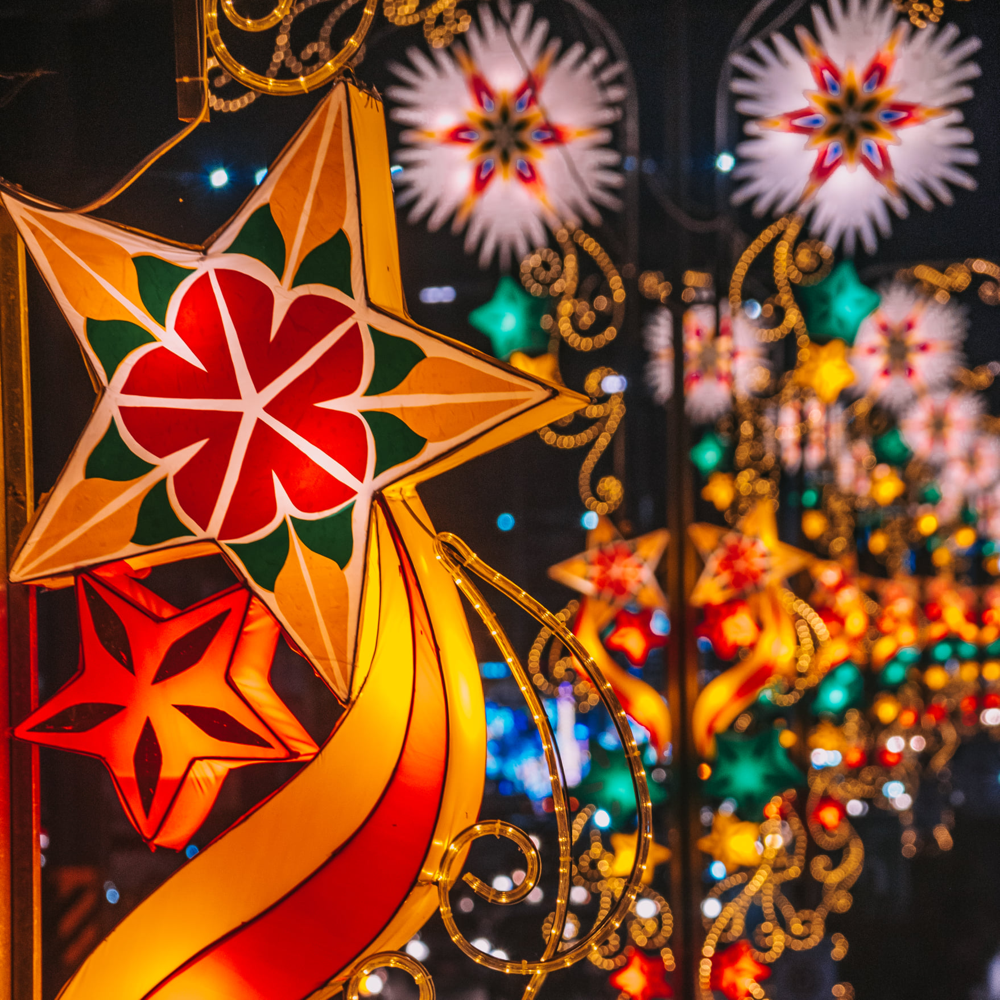
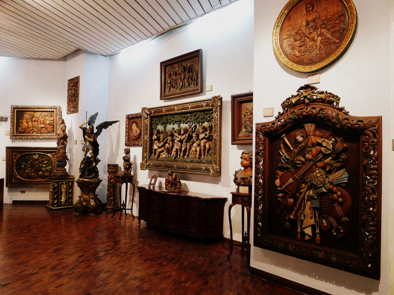

A guide to the province’s lanterns, woodcarving traditions, and contemporary Kapampangan artists.
Pampanga is known as the Culinary Capital of the Philippines, but its artistic heritage is just as rich. The province blends pre-colonial Kapampangan traditions, Spanish-era craftsmanship, and contemporary creativity.
From world-famous lantern festivals to centuries-old woodcarving towns, Pampanga stands as one of the most vibrant cultural hubs in the country.
The heritage that shaped the province

SAN FERNANDO
The Ligligan Parul features massive lanterns reaching 20 feet wide. Powered by thousands of lights and intricate engineering, it highlights unity and the Kapampangan spirit.

GUAGUA (BETIS)
Home of master woodcarvers creating santos, retablos, and furniture. Workshops here feel like living museums where skills are passed down through generations.

VARIOUS TOWNS
Delicate capiz-shell parols feature bright colors and detailed designs. These smaller lanterns are popular for home displays and reflect meticulous handwork.
Kapampangan Artists Who Shape Today’s Culture
National Artist. Known for transparent cubism, merging rural Filipino life with modern themes.
Master Woodcarver. "Apung Juan" helped establish Betis as a renowned center for crafting santos.
Photographer. Documents Kapampangan culture, rituals, and identity through visual storytelling.
Sculptor. His large-scale religious pieces blend classical techniques with modern approaches.



